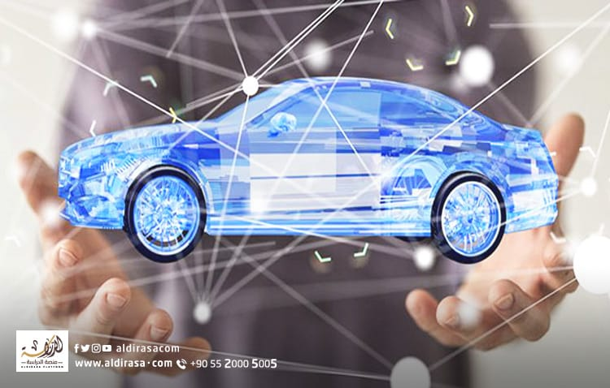
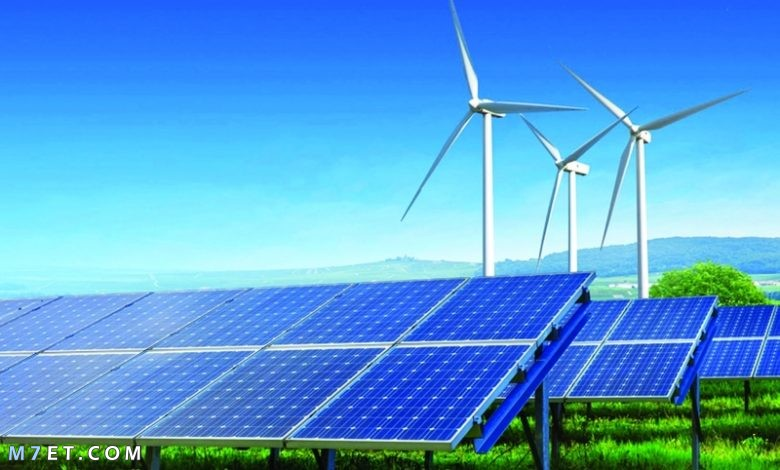
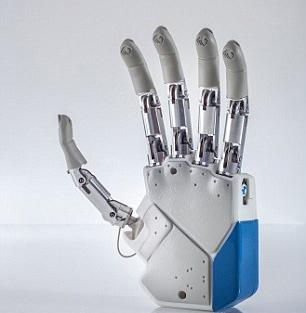
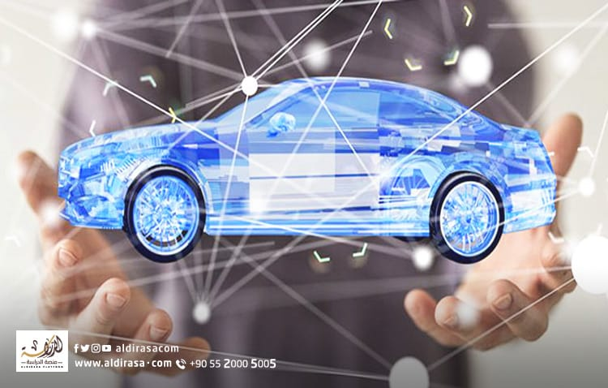
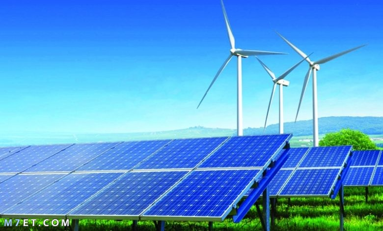
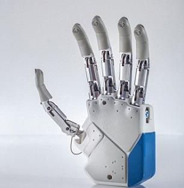

Delta Technology University
Delta Technology University in Quesna, but it is unique in its chosen
location so that it is in the heart of the industrial zone in Quesna. That is,
you are located in the heart of the event. You learn inside the university.
First we have to understand what technological universities mean, their importance to us, why we
need them, and why they will be the beginning of changing the education system in Egypt?First of all,
technological universities are an educational system that combines practical reality, practice, and theoretical materials,
and its importance is that Egypt currently needs skilled technicians who combine “workmanship”
and science, working with their own hands in giant projects undertaken by the state, and it does not need to graduate
thousands of engineers who are already present to design these Projects, designs exist and need to be implemented This
university will achieve the difficult equation that you will produce for us, as we mentioned, skilled technologists.
Keep them in these factories with rewarding salaries, and with all these factors, you will find that the demand for such sciences is great,
meaning that you will change the educational map in Egypt, not only this, but you will restore technical education to its throne.
(IT)
(Autotronics Engineering)
(Mechatronics)
is everything related to the applications of modern technology in order to analyze,
develop and build systems and improve the performance and productivity of institutions and projects, here we mainly mean
smart computers. It enhances opportunities for innovation and creativity in all types of business and has become a parallel world.
read more
is to provide the student with knowledge of everything related to mechanical issues and in the field
of applied mechanics, thermal and automobiles, and to provide the student
with the skill and ability to analyze mechanical systems in design, modeling,
vibrations, thermal systems and fluids.
read more
It is used to denote a very broad and complex engineering field, and this specialty is developing in an amazing way from day to day. This field of engineering includes the design of any product whose work depends on the integration of mechanical and electronic systems, as it plays the role of coordinator among them and setting up a control system for them. read more
(New and Renewable Energy)
(Artificial limbs and auxiliary devices)
aims to provide graduates with advanced knowledge of the latest technologies for green energy generation.
These technologies include solar cells, wind energy, biofuels, biomass, and natural gas.
The program provides students with interdisciplinary courses.
read more
A device that is designed and manufactured in an engineering manner and precise criteria in the
calculations to perform the role of the natural limb that was amputated,
whether the hands or the feet.
The prosthesis is integrated with the human body to become a single unit, so that the patient can control the
prosthesis more easily, and this is for the advanced types of prosthetics.
read more
 




